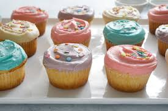

A little bit about cupcakes:
In the early 19th century, there were two different uses for the term cup cake or cupcake. In previous centuries, before muffin tins were widely available, the cakes were often baked in individual pottery cups, ramekins, or molds and took their name from the cups they were baked in.
The other kind of "cup cake" referred to a cake whose ingredients were measured by volume, using a standard-sized cup, instead of being weighed. Recipes whose ingredients were measured using a standard-sized cup could also be baked in cups; however, they were more commonly baked in tins as layers or loaves. In later years, when the use of volume measurements was firmly established in home kitchens, these recipes became known as 1234 cakes or quarter cakes, so called because they are made up of four ingredients: one cup of butter, two cups of sugar, three cups of flour, and four eggs.[5][6] They are plain yellow cakes, somewhat less rich and less expensive than pound cake, due to using about half as much butter and eggs compared to pound cake.
Super Moist Chocolate Cupcakes
Ingredients: All-purpose flour (spoon & leveled),Unsweetened natural cocoa powder Teaspoon baking powder, Teaspoon baking soda, Teaspoon salt, Eggs, at room temperature* Granulated sugar, Packed light brown sugar, Vegetable or canola oil (or melted coconut oil) Pure vanilla extract, Buttermilk, at room temperature, Frosting: chocolate buttercream or any of these frostings